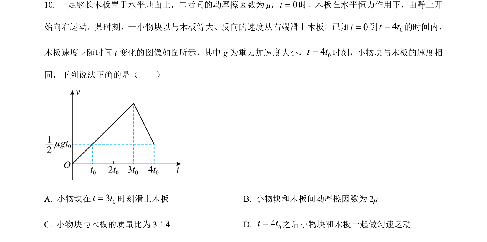
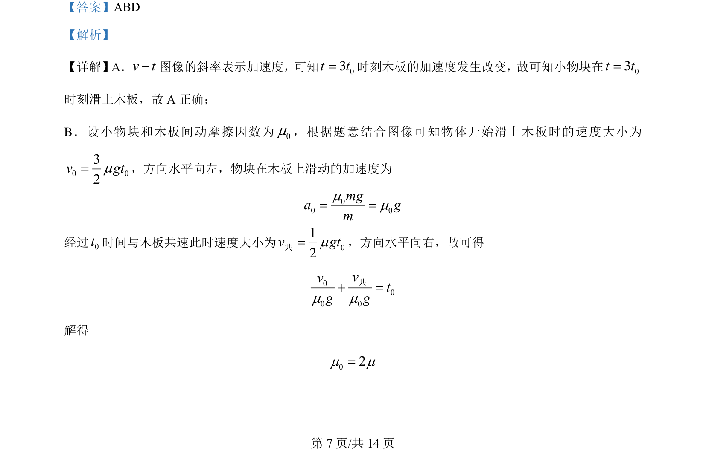
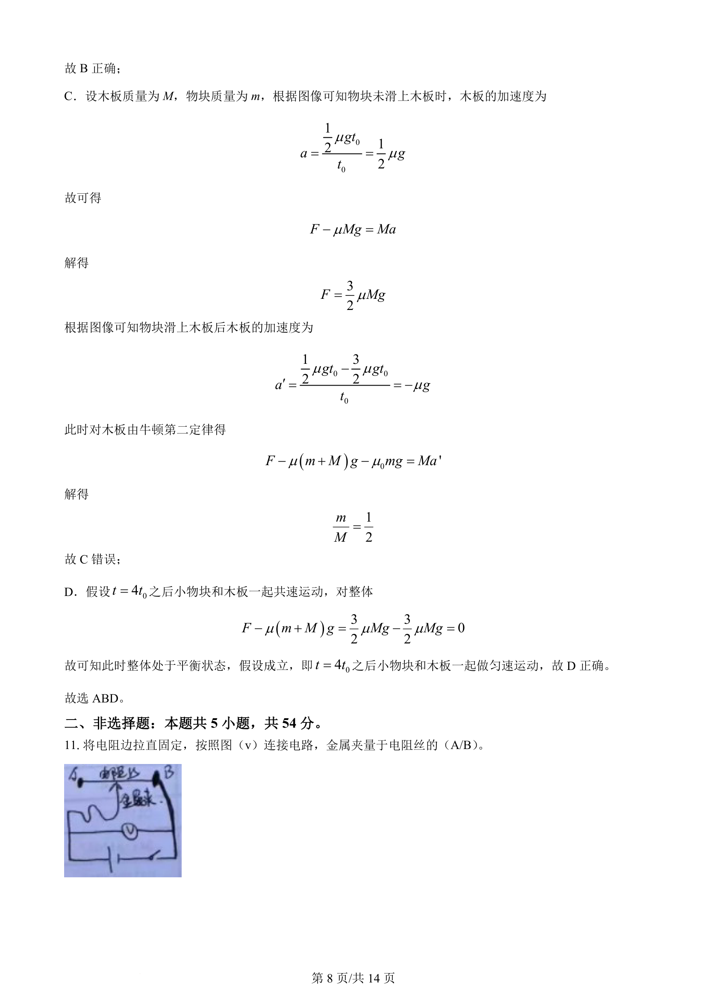
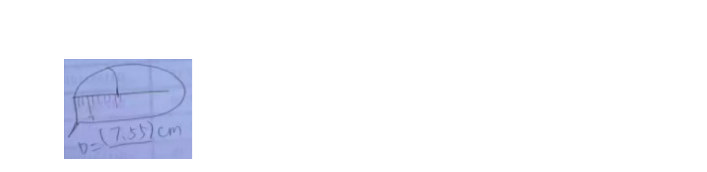

考点：v-t图像 牛顿第二定律 摩擦力 整体法与隔离法

考查 v-t 图像分析木板与物块相对运动、受力及运动状态判断。



📄 原 PDF 第 7 页：
素材/真题/吉林/2008-2024·（吉林）物理高考真题/2024年高考物理试卷（辽宁）（解析卷）.pdf
【答案】ABD 【解析】 【详解】A．v t-图像的斜率表示加速度， 可知03t t=时刻木板的加速度发生改变， 故可知小物块在03t t= 时刻滑上木板，故 A 正确； B．设小物块和木板间动摩擦因数为0m，根据题意结合图像可知物体开始滑上木板时的速度大小为 0 032v gtm=，方向水平向左，物块在木板上滑动的加速度为 00 0mga gmmm= = 经过0t时间与木板共速此时速度大小为 012v gtm=共，方向水平向右，故可得 000 0vvtg gm m+ =共 解得 02m m=